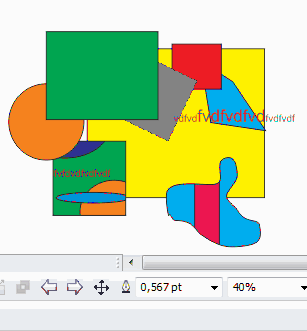

Новое редактирование групп и контейнеров
Sancho / 06.04.2011, 13:59/00:41
Форум:
Так как я много работаю и в CorelDRAW и в Illustrator, привык к хорошему в каждой программе. Мне очень нравится как Илл позволяет работать в группах и масках. Немного подумав я написал макрос который добавляет такую же возможность и в CorelDRAW. С ней можно легко зайти в группу и произвести любые изменения над объектами в ней, а затем так же просто выйти.
Также, вы наверное знаете что в контейнере нельзя работать с направляющими. Благодаря макросу и его новому режиму редактирования, такой проблемы больше нет.
Вот небольшое видео как это работает.

Пока что макрос находится в тестировании в "боевых" условиях. Будет ли этот макрос платным или бесплатным ещё не понятно.
Sancho, проверял на 7 и 8 ке
Страницы